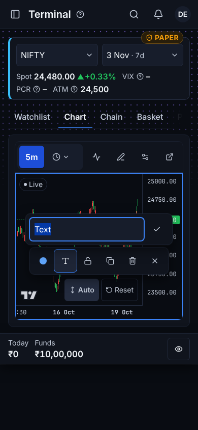
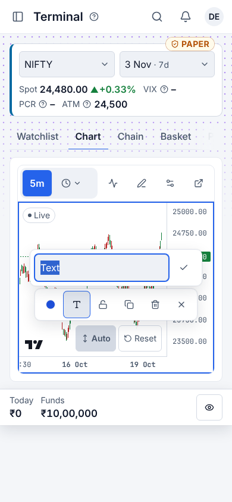
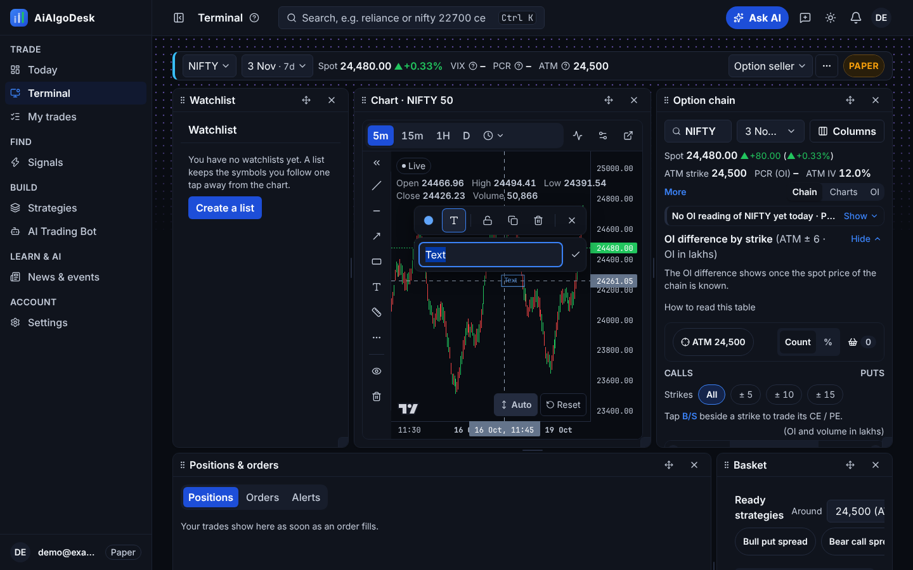
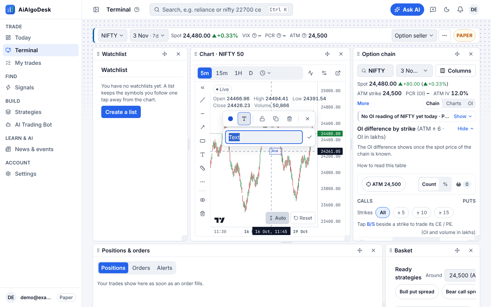
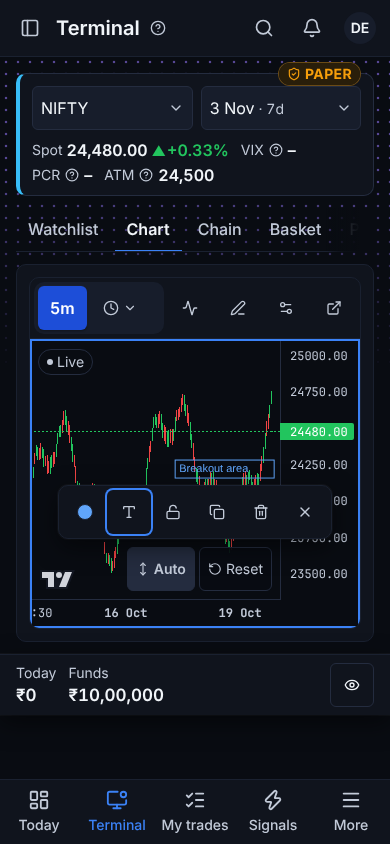
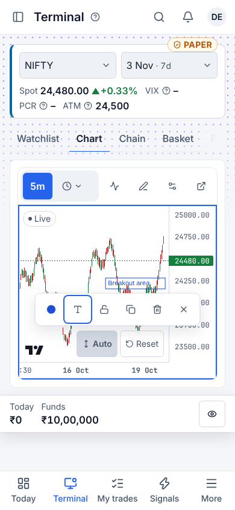
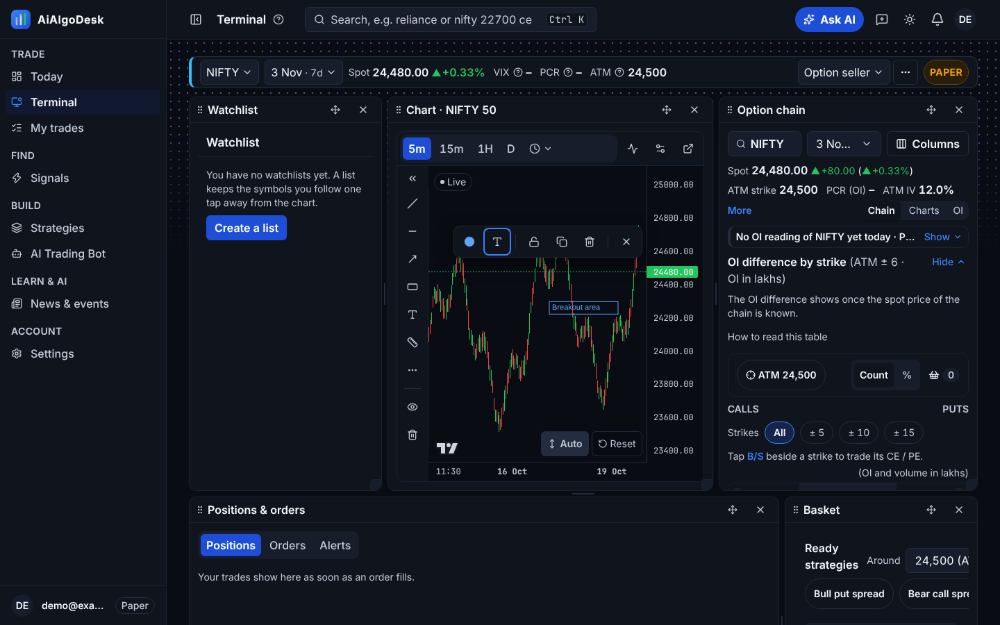
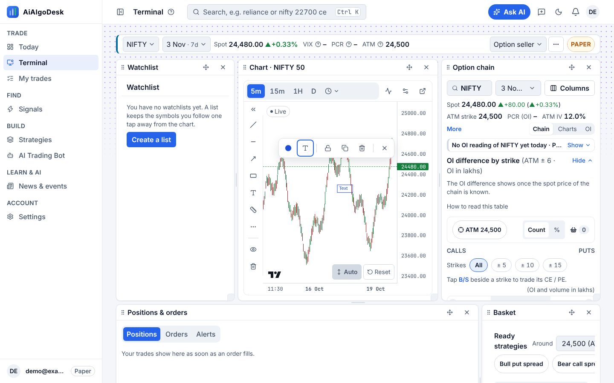

Before: after Text was picked, the browser opened its own prompt box ("Text for the label (no < or >)"), outside the app's look. Then a tap placed the label.
After: pick Text, then tap the chart. The label appears as "Text", selected, with its text field open and the text highlighted, so typing replaces it. Enter saves, Escape keeps "Text". A selected label gets a thin box instead of a round handle over its first letter.







